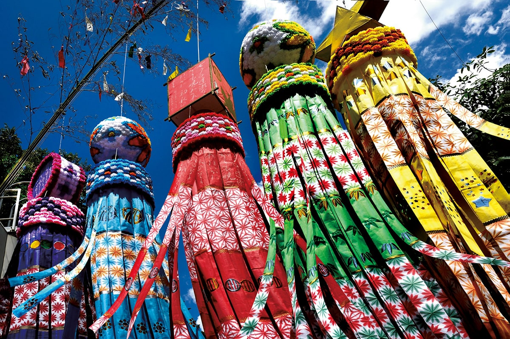
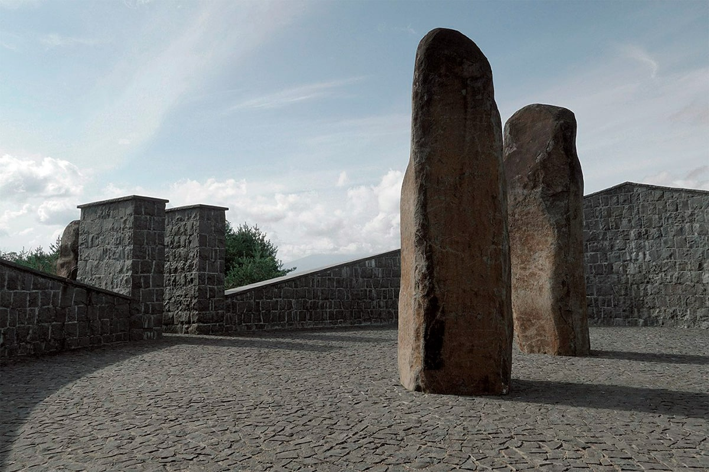
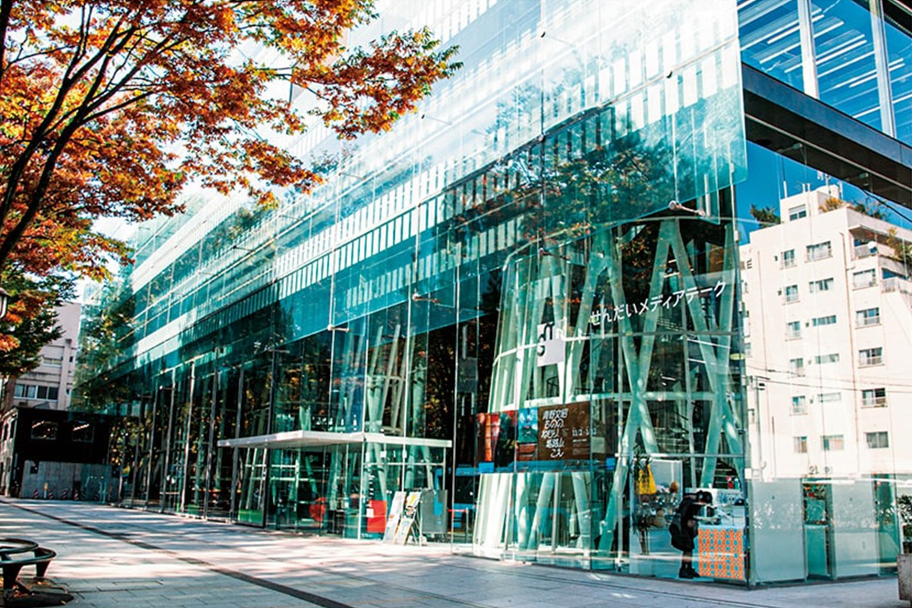
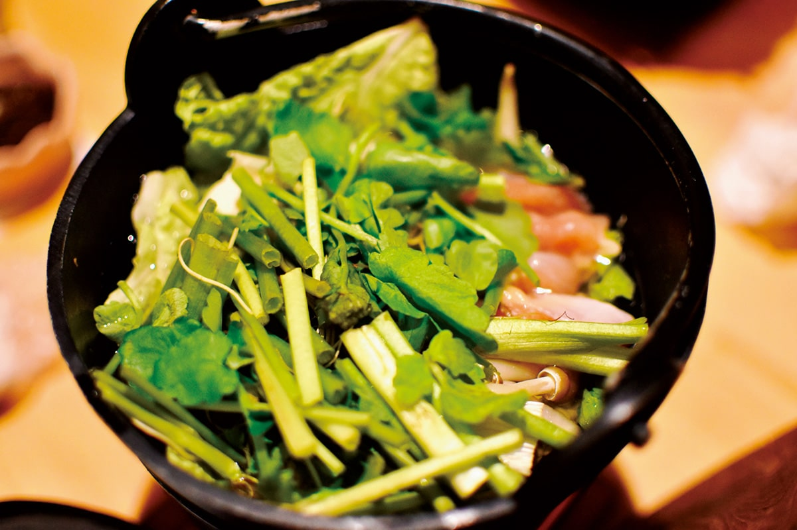
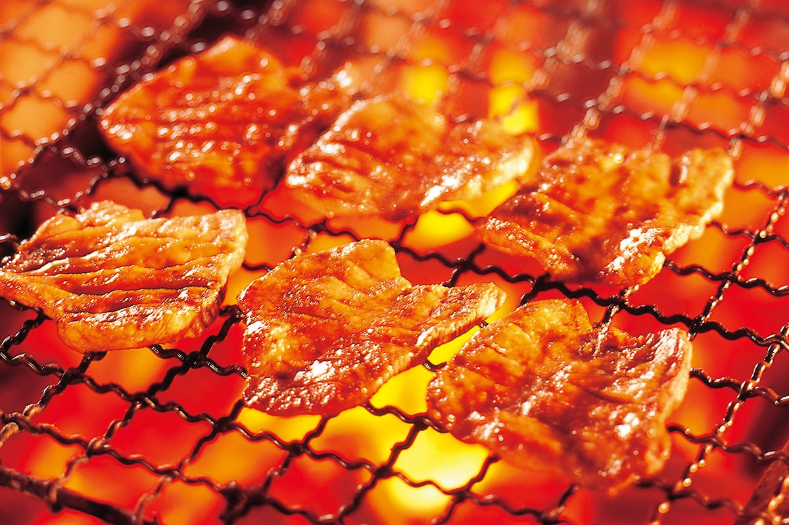
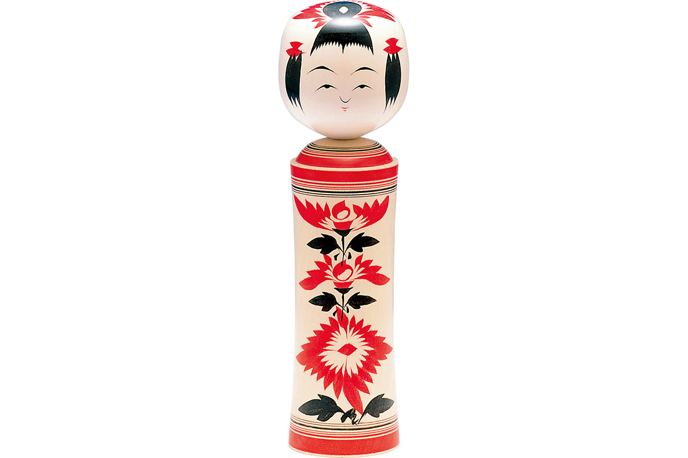
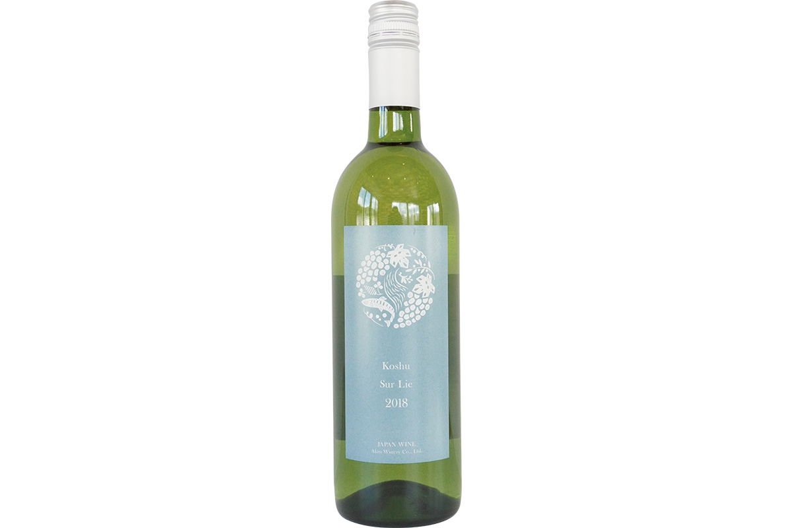
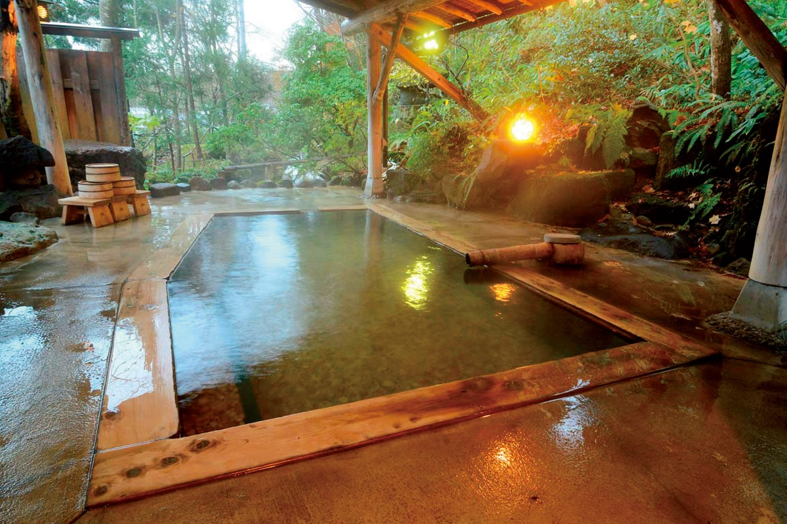

Префектура Мияги
Мияги: говяжий язык на углях, бумажные полосы и 260 островов

Над улицей на длинных бамбуковых шестах висят разноцветные бумажные полосы и шары, за ними видно синее небо.
Здесь правил военачальник, которого звали за любовь к еде, поэтому и сегодня в крае кормят плотно: жареный язык, суп из дикой петрушки и вино с собственного виноградника. Рассказываем, за чем ехать в Мияги.
О префектуре
Край, где еда в почёте
Центр края, город Сэндай, который зовут городом деревьев, основал военачальник Датэ Масамунэ (1567–1636), один из самых могущественных князей северо-востока, известный под прозвищем Одноглазый дракон. Отсюда управляли делами всего северо-востока, и земли вокруг Сэндая до сих пор остаются житницей.
Масамунэ продвигал освоение новых полей на равнине Сэндай, чтобы собрать больше риса, и так сложился один из главных рисовых районов страны. Уже после войны здесь вывели сорта сасанисики и хитомэборэ, которые знают по всей Японии. Рядом, в Кэсэннуме, ловят больше всех свежего тунца в стране, а из местных блюд известны говяжий язык и моти с зелёной соей, которые, по преданию, придумал сам Масамунэ.
В 1871 году после отмены княжеств край назвали префектурой Сэндай, но уже на следующий год переименовали в Мияги, а к 1876 году границы стали почти такими, как теперь. Восточный берег выходит к Тихому океану: от Кэсэннумы до полуострова Одзика тянется изрезанное побережье, а южнее лежит залив Мацусима с одной из трёх самых известных панорам страны. Этот залив первым в Японии приняли в клуб самых красивых заливов мира, куда входят бухта Мон-Сен-Мишель во Франции и бухта Халонг во Вьетнаме.
Что посмотреть
Каменные знаки на месте школы
Памятник в Исиномаки
На открытой площадке у моря стоят две высокие каменные стелы, поставленные там, где до 2011 года была школа. Это место памяти о волне, которая прошла по этому берегу, и сюда приходят, чтобы посмотреть на море и на линию, до которой дошла вода.

Что ещё посмотреть
- Залив Мацусима, острова, поросшие соснами
- Гора Курикола, вулкан с альпийскими лугами
- Аллея сакур у реки Сироиси, тысяча вишен вдоль берега
Праздники
Бумажные полосы над улицей
Праздник Танабата в Сэндае
Этот праздник идёт со времён Датэ Масамунэ. Улицы города закрывают разноцветными бумажными украшениями: длинные полосы, шары и фигурки висят на бамбуковых шестах, и ради этой картины сюда приезжает больше двух миллионов человек за три дня. Те самые украшения, длинные пёстрые полосы над улицей, видны на снимке в начале статьи.
- Период
- с 6 по 8 августа
- Место
- центр Сэндая и торговые улицы вокруг
Другие праздники
- Обливание водой в Ёнэкаве, летний обряд с водой
- Фонари и фейерверк в Мацусиме, вечерний спуск фонарей на воду
- Праздник паруса в святилище Сиогама, обряд с лодками у моря
Музеи и архитектура
Стеклянный дом без колонн
Медиатека Сэндая
Это одна из главных работ архитектора Тоёо Ито, лауреата Притцкеровской премии. В доме нет ни одной колонны: перекрытия держат тринадцать тонких труб из стального каркаса, а наружные стены целиком сделаны из стекла, поэтому здание кажется прозрачным и днём пропускает свет во все залы.

- Адрес
- 2-1 Kasuga-machi, Aoba, Sendai, Miyagi
- Телефон
- +81 22-713-3171
- Сайт
- smt.jp
Что ещё посмотреть
- Музей просвещения, старое училище в дереве
- Библиотека префектуры Мияги, большой читальный зал
- Художественный музей Канно, собрание живописи
Местная кухня
Суп из дикой петрушки
Набэ с петрушкой сэри
Петрушку сэри в этих местах выращивают уже четыреста лет, и это одно из главных растений здешней кухни. В горшок идут все части сразу: листья, стебли и корни, поэтому суп получается и травяным, и сытным. Подают его прямо на столе, а в конце в бульон обычно кладут лапшу.

Что ещё попробовать
- Дон с дарами моря, миска риса с рыбой и моллюсками
- Жареный говяжий язык, тонкие ломтики с солью
- Моти с зелёной соей, сладкая паста из соевых бобов
Где поесть
Язык на угольной решётке
Улица говяжьего языка
На третьем этаже вокзала Сэндай собрана гастрономическая улица, где стоят лучшие заведения города, которые готовят говяжий язык. В 2020 году её открыли заново после обновления, и теперь здесь шесть сильных кухонь, включая две новые.

- Адрес
- 1-1-1 Chuo, Aoba, Sendai, Miyagi, Sendai Station 3F
- Телефон
- +81 22-261-1790
- Часы
- с 10:00 до 22:30, последний заказ в 22:00
- Выходные
- нет
Ремёсла
Кукла, которая поёт при повороте
Куклы кокэси из Наруго
В этих местах делают кукол по старому способу: если повернуть голову такой куклы, раздаётся скрип. В музее кокэси показывают, как вытачивают и расписывают фигурку, и дают попробовать сделать это самому.

- Справки
- музей кокэси в Наруго
- Телефон
- +81 229-83-3600
- Сайт
- kokesikan.com
Что привезти
Белое вино из Акиу
Вино «Косю сюр ли»
Винодельня стоит прямо перед зелёными рядами виноградника. В этом белом сухом вине чувствуются цитрус, зелёное яблоко и белый персик, а горчинка держит кислоту в равновесии. Бутылка 750 миллилитров стоит 2530 иен.

- Телефон
- +81 22-226-7475
- Сайт
- akiuwinery.co.jp
Где остановиться
Восемь купелей у дороги в горы
Гостиница Онума
Она стоит в восточной части курорта Наруго, который в списке здешних источников стоит на самом верху. Здесь восемь разных купелей, в том числе садовая купель под открытым небом, которую можно занять целиком, и вода в них идёт прямо из источника, без подогрева.

- Адрес
- 34 Akiyu, Naruko-onsen, Osaki, Miyagi
- Телефон
- +81 229-83-3052
- Комнат
- 20, из них 10 в корпусе для длительного лечения
- Цена
- от 8730 иен за ночь с двумя приёмами пищи, налоги и банный сбор отдельно
- Сайт
- ohnuma.co.jp
Местный диалект
Как здесь говорят «очень вкусно»
- игинари умээ годаочень вкусно
- обан дэсудобрый вечер
- амэ саа даттэ, модзокой дажаль, что попал под дождь
- мэ ни гоми га хайттэ идзуйв глаз попала соринка
Рекорды
В чём Мияги первый
- №1 выращивание сладкого перца: первое место в стране
- №1 улов акул: первое место
- №1 потребление рыбного рулета камабоко: первое место
Вопросы и ответы
Что ещё спрашивают о Мияги
Сколько островов в заливе Мацусима?
Около двухсот шестидесяти. Большие и совсем маленькие острова создают картину, которая меняется от сезона, времени дня и точки обзора. Кроме прогулочных судов по заливу сюда приезжают ради храма Дзуйгандзи, и вместе с двумя другими видами эта панорама входит в число трёх самых известных в стране.
Как называется миска риса со свежей рыбой и моллюсками?
Киракира-дон из Минамисанрику. Это здешняя рисовая миска, которую ещё зовут шкатулкой морских сокровищ: летом в неё кладут морских ежей, зимой икру, и всё это выкладывают так густо, что край почти не видно.
Справочник
Мияги в цифрах
Общие сведения
| Административный центр | Сэндай |
| Муниципалитеты | 14 городов, 20 посёлков, 1 деревня |
| Площадь | 7282 кв. км |
| Население | 2,32 млн человек |
| Плотность населения | 318,0 человек на кв. км |
| Туристов в год | 7,41 млн |
| Дерево префектуры | дзельква |
| Цветок префектуры | леспедеца |
| Птица префектуры | гусь |
Климат
| Средняя температура | +13,6 |
| Максимум | +29,7 |
| Минимум | минус 2,2 |
| Осадки | 1082 мм |
| Ясных дней | 20 |
| Дождливых дней | 106 |
| Снежных дней | 63 |
Для путешественника
| Онсэнов | 43 |
| Гостиниц и рёканов | 757 |
| Музеев искусств | 21 |
| Музеев | 103 |
| Митиноэки, придорожных станций | 15 |
| Национальное сокровище | святилище Осаки-Хатимангу |
| Важных культурных ценностей | 62, из них 6 национальных сокровищ |
| Исторических мест | 35 |
| Живописных мест | 6 |
| Природных памятников | 28 |
| Национальные парки | Санрику-фукко, Курико, Дзао |
Природные памятники
- Золотая рыбка тэцугё, редкая рыба здешних прудов
- Корейская слива, дерево у старинной усадьбы
- Гора Аоба, лесной склон над городом
- Глициния у водопада, старая лиана у воды
- Птицы озёр Идзунума, место зимовки водоплавающих